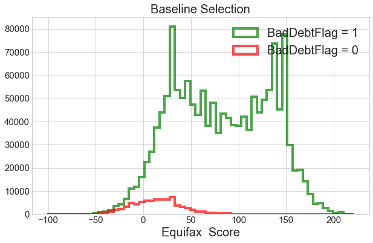
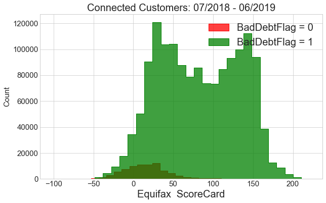

make one plot for workspace entry#
import pandas as pd
import numpy as np
import matplotlib.pyplot as plt
import seaborn as sns
from sklearn import metrics
plt.rcParams["figure.figsize"] = [10, 5]
plt.rcParams.update({'font.size': 15})
## Data path
data_path = "/Users/boccia/Data/"
import sys
sys.path.append("/Users/boccia/ML/")
## Helper functions
import DSTheLab_utils.exploratory_analysis.printout as tlab_printout
import DSTheLab_utils.exploratory_analysis.transformation as tlab_trf
import DSTheLab_utils.visualization.plot_helper as tlab_plt
import importlib
---------------------------------------------------------------------------
ModuleNotFoundError Traceback (most recent call last)
/tmp/ipykernel_23313/4202066090.py in <module>
9
10 ## Helper functions
---> 11 import DSTheLab_utils.exploratory_analysis.printout as tlab_printout
12 import DSTheLab_utils.exploratory_analysis.transformation as tlab_trf
13 import DSTheLab_utils.visualization.plot_helper as tlab_plt
ModuleNotFoundError: No module named 'DSTheLab_utils'
plt.rcParams["figure.figsize"] = [10, 5]
plt.rcParams.update({'font.size': 15})
data1 = 'LabModelData.csv'
data_out = 'DecisionAnalysisData.csv'
load df#
df = pd.read_csv('~/Data/'+data_out)
---------------------------------------------------------------------------
FileNotFoundError Traceback (most recent call last)
/tmp/ipykernel_23313/567211918.py in <module>
----> 1 df = pd.read_csv('~/Data/'+data_out)
~/miniconda3/envs/ds-base/lib/python3.9/site-packages/pandas/util/_decorators.py in wrapper(*args, **kwargs)
309 stacklevel=stacklevel,
310 )
--> 311 return func(*args, **kwargs)
312
313 return wrapper
~/miniconda3/envs/ds-base/lib/python3.9/site-packages/pandas/io/parsers/readers.py in read_csv(filepath_or_buffer, sep, delimiter, header, names, index_col, usecols, squeeze, prefix, mangle_dupe_cols, dtype, engine, converters, true_values, false_values, skipinitialspace, skiprows, skipfooter, nrows, na_values, keep_default_na, na_filter, verbose, skip_blank_lines, parse_dates, infer_datetime_format, keep_date_col, date_parser, dayfirst, cache_dates, iterator, chunksize, compression, thousands, decimal, lineterminator, quotechar, quoting, doublequote, escapechar, comment, encoding, encoding_errors, dialect, error_bad_lines, warn_bad_lines, on_bad_lines, delim_whitespace, low_memory, memory_map, float_precision, storage_options)
584 kwds.update(kwds_defaults)
585
--> 586 return _read(filepath_or_buffer, kwds)
587
588
~/miniconda3/envs/ds-base/lib/python3.9/site-packages/pandas/io/parsers/readers.py in _read(filepath_or_buffer, kwds)
480
481 # Create the parser.
--> 482 parser = TextFileReader(filepath_or_buffer, **kwds)
483
484 if chunksize or iterator:
~/miniconda3/envs/ds-base/lib/python3.9/site-packages/pandas/io/parsers/readers.py in __init__(self, f, engine, **kwds)
809 self.options["has_index_names"] = kwds["has_index_names"]
810
--> 811 self._engine = self._make_engine(self.engine)
812
813 def close(self):
~/miniconda3/envs/ds-base/lib/python3.9/site-packages/pandas/io/parsers/readers.py in _make_engine(self, engine)
1038 )
1039 # error: Too many arguments for "ParserBase"
-> 1040 return mapping[engine](self.f, **self.options) # type: ignore[call-arg]
1041
1042 def _failover_to_python(self):
~/miniconda3/envs/ds-base/lib/python3.9/site-packages/pandas/io/parsers/c_parser_wrapper.py in __init__(self, src, **kwds)
49
50 # open handles
---> 51 self._open_handles(src, kwds)
52 assert self.handles is not None
53
~/miniconda3/envs/ds-base/lib/python3.9/site-packages/pandas/io/parsers/base_parser.py in _open_handles(self, src, kwds)
220 Let the readers open IOHandles after they are done with their potential raises.
221 """
--> 222 self.handles = get_handle(
223 src,
224 "r",
~/miniconda3/envs/ds-base/lib/python3.9/site-packages/pandas/io/common.py in get_handle(path_or_buf, mode, encoding, compression, memory_map, is_text, errors, storage_options)
700 if ioargs.encoding and "b" not in ioargs.mode:
701 # Encoding
--> 702 handle = open(
703 handle,
704 ioargs.mode,
FileNotFoundError: [Errno 2] No such file or directory: '/home/abocci/Data/DecisionAnalysisData.csv'
df.info()
<class 'pandas.core.frame.DataFrame'>
RangeIndex: 3456513 entries, 0 to 3456512
Data columns (total 19 columns):
# Column Dtype
--- ------ -----
0 Unnamed: 0 int64
1 ApplicationNumber int64
2 ApplicationDate object
3 AcceptFlag int64
4 DeclineFlag int64
5 NoDecisionFlag int64
6 DepositRequiredFlag int64
7 PolicyDeclineFlag float64
8 ReasonCategory object
9 ConnectFlag int64
10 ConnectTenureDays float64
11 ExisitingCustomerFlag int64
12 ExisitingCustomerTenure float64
13 DisconnBadDebtFlagWithin3M int64
14 BureauCalled object
15 EquRiskScorecardScore float64
16 EquRiskScoreScorecardName object
17 ExpRiskScorecardScore float64
18 ExpRiskScoreScorecardName object
dtypes: float64(5), int64(9), object(5)
memory usage: 501.1+ MB
Score after baseline selection#
ff1 = df['ConnectFlag'] == 1
ff2 = df['AcceptFlag'] == 1
ff3 = df['BureauCalled'] !="None"
df1 = df[ff1 & ff2 & ff3] ## df1 is baseline selection
Plot with baseline selection#
ff = df1['DisconnBadDebtFlagWithin3M'] == 1
d1 = df1['EquRiskScorecardScore'][ff].dropna()
d2 = df1['EquRiskScorecardScore'][~ff].dropna()
names = ['BadDebtFlag = 0', 'BadDebtFlag = 1']
dd = [d1,d2]
ax = tlab_plt.MakeStackedPlot(dd,bins=60, stack=False, legend=names, xlabel='Equifax Score',title='Baseline Selection')

ax = tlab_plt.MakePDFPlots(dd, names, bins=30, norm=False, kde=False, xlabel='Equifax ScoreCard',title='Connected Customers: 07/2018 - 06/2019')

## Make a sinmple file
cc = ['EquRiskScorecardScore', 'DisconnBadDebtFlagWithin3M']
df2 = df1[cc]
ff = df2['DisconnBadDebtFlagWithin3M'] == 1
d1 = df2['EquRiskScorecardScore'][ff].dropna()
d2 = df2['EquRiskScorecardScore'][~ff].dropna()
names = ['BadDebtFlag = 0', 'BadDebtFlag = 1']
dd = [d1,d2]
ax = tlab_plt.MakeStackedPlot(dd,bins=60, stack=False, legend=names, xlabel='Equifax Score',title='Baseline Selection')
df2.to_csv('~/Data/NITPForSimplePlot.csv')
xd plot#
df = pd.read_csv('NITPForSimplePlot.csv')
df = df.drop('Unnamed: 0', axis=1)
df.info()
<class 'pandas.core.frame.DataFrame'>
RangeIndex: 1566276 entries, 0 to 1566275
Data columns (total 2 columns):
# Column Non-Null Count Dtype
--- ------ -------------- -----
0 EquRiskScorecardScore 1564512 non-null float64
1 DisconnBadDebtFlagWithin3M 1566276 non-null int64
dtypes: float64(1), int64(1)
memory usage: 23.9 MB
c1 = df.columns.to_list()[0]
c2 = df.columns.to_list()[1]
print(f'{c1} and {c2}')
EquRiskScorecardScore and DisconnBadDebtFlagWithin3M
df[c1].dropna()
0 63.0
1 121.0
2 63.0
3 100.0
4 67.0
...
1566271 110.0
1566272 15.0
1566273 18.0
1566274 18.0
1566275 48.0
Name: EquRiskScorecardScore, Length: 1564512, dtype: float64
df = df.dropna()
df[c2].isna().sum()
0
names = ['BadDebtFlag = 0', 'BadDebtFlag = 1']
df
| EquRiskScorecardScore | DisconnBadDebtFlagWithin3M | |
|---|---|---|
| 0 | 63.0 | 0 |
| 1 | 121.0 | 0 |
| 2 | 63.0 | 0 |
| 3 | 100.0 | 0 |
| 4 | 67.0 | 0 |
| ... | ... | ... |
| 1566271 | 110.0 | 0 |
| 1566272 | 15.0 | 0 |
| 1566273 | 18.0 | 0 |
| 1566274 | 18.0 | 0 |
| 1566275 | 48.0 | 0 |
1564512 rows × 2 columns
plt.xkcd()
#plt.yticks([])
fig = plt.figure(figsize=(12,8))
ax = fig.add_axes((0.1, 0.2, 0.8, 0.7))
ax = sns.kdeplot(data=df[:10000], x=c1, hue=c2)
plt.yticks([])
ax.spines['right'].set_color('none')
ax.spines['top'].set_color('none')
ax.legend()
ax.set_ylabel('frequency', fontsize=20)
ax.set_xlabel('', fontsize=20)
ax.set_title('NITP Score', fontsize=40)
plt.annotate(
#'THE DAY I REALIZED\nI COULD COOK BACON\nWHENEVER I WANTED',
' Got the Phone \n and never \n started paying',
xycoords='axes fraction',
xy=(0.4, 0.11), arrowprops=dict(arrowstyle='->'), xytext=(0.4, 0.25), size=25)
#xy=(0.35, 0.11), arrowprops=dict(arrowstyle='->', connectionstyle="angle3,angleA=90,angleB=0"), xytext=(0.4, 0.25))
plt.annotate(
#'THE DAY I REALIZED\nI COULD COOK BACON\nWHENEVER I WANTED',
'All Other\n Customers',
xycoords='axes fraction',
xy=(0.31, 0.5), arrowprops=dict(arrowstyle='->'), xytext=(0.03, 0.8), size=27)
#xy=(0.35, 0.11), arrowprops=dict(arrowstyle='->', connectionstyle="angle3,angleA=90,angleB=0"), xytext=(0.4, 0.25))
fig.text(
0.37, 0.05,
'Low-Score\n Region ',
ha='center',
fontsize=30)
fig.text(
0.7, 0.05,
'High-Score\n Region ',
ha='center',
fontsize=30)
plt.savefig('nitp-post-plot.png')
No handles with labels found to put in legend.
sns.__version__
'0.11.1'